Seoul Dump - 2
내가 왜 서울을

적성검사기간이 만료된 지 1년. 운전도 안하는데 면허 딴지 벌써 11년이 됐다. 올해안에 처리 안하면 면허가 정지 된단다. 아침부터 서부운전면허시험장에 찾아갔다. 가지고 있는 사진이라곤 걸인처럼 나온게 다여서 혹여나 통과가 안될까 했는데 다행히 패스.
 대신 늦은만큼 벌금도 내야 한단다. 이만사천원이나 보냈다. 자진 납부하면 3만원에서 6천원 깎아준다. 헛돈쓰지 않기 위해 다들 본인의 면허증 적성기간을 확인해보도록 하자.
대신 늦은만큼 벌금도 내야 한단다. 이만사천원이나 보냈다. 자진 납부하면 3만원에서 6천원 깎아준다. 헛돈쓰지 않기 위해 다들 본인의 면허증 적성기간을 확인해보도록 하자.
 버스타고 돌아오는 길에 정말 오랜만에 본 합정 Hollys. 간판에 붙은 24시 open 표시는 합정과 홍대에서 젊음을 불태우다 아침 첫 차를 기다리는 어수룩한 영혼들에게 실낱같은 희망이곤 했다. 다만 실내에는 좀비 영화의 한 장면을 방불케 하기에 자리 잡기는 여간 쉽지 않다. 그럼에도 좋은 시절이었다.
버스타고 돌아오는 길에 정말 오랜만에 본 합정 Hollys. 간판에 붙은 24시 open 표시는 합정과 홍대에서 젊음을 불태우다 아침 첫 차를 기다리는 어수룩한 영혼들에게 실낱같은 희망이곤 했다. 다만 실내에는 좀비 영화의 한 장면을 방불케 하기에 자리 잡기는 여간 쉽지 않다. 그럼에도 좋은 시절이었다.
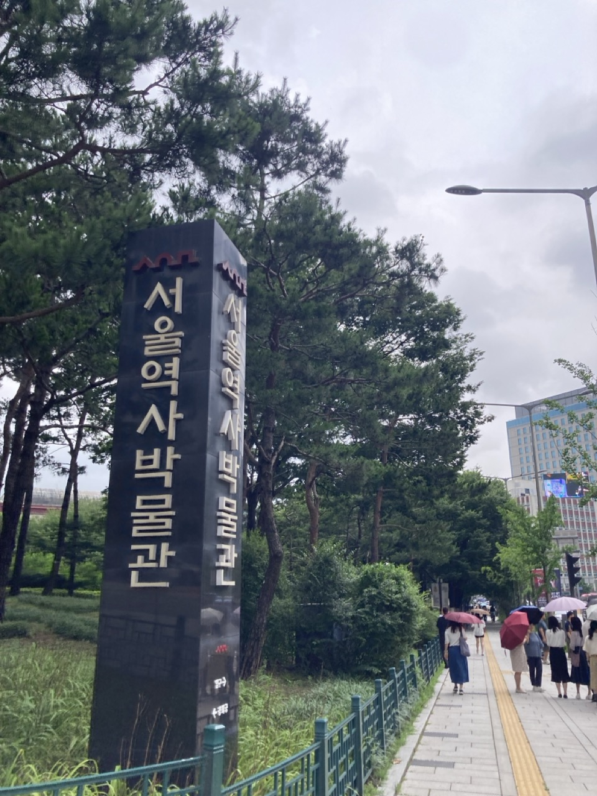 광화문 가는 길, 서울역사박물관 앞 넓은 공터는 여전히 매끈하다. 이 곳은 어린 시절 인라인, 롤러, 힐리스, 킥보드 유저들의 성지이곤 했다. 조무래기 어린 아이들이 공공장소를 헤짚고 노는 것이 다소 탐탁지 않았던 경비아저씨와 본의 아니게 경찰과 도둑 놀이를 할 수 밖에 없었던 추억이 서린 곳이다.
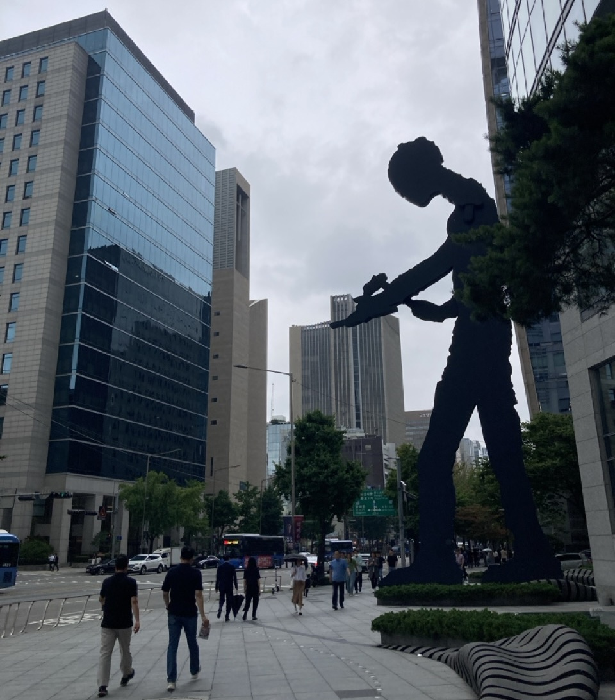 새문안교회 맞은편 흥국생명 빌딩 앞에 위치한 거인 <Hammering Man>. 현대인의 숭고한 노동과 고독함을 상징하는 이 작품은 08시부터 19시까지 약 35초마다 망치질을 한다. 재밌는 점은 평일에만 움직이고 주말과 공휴일은 쉰다는 것이다. 어떻게 보면 우리나라의 가장 오래된 노동의 중심지인 광화문에 잘 맞는 작품이겠다. 우리나라도 직종 가리지 않고 주말에는 쉬어도 이상하지 않은 분위기가 있으면 좋겠다. 물론 옛날 주 6일제 할때보다는 지금이 낫겠지만.
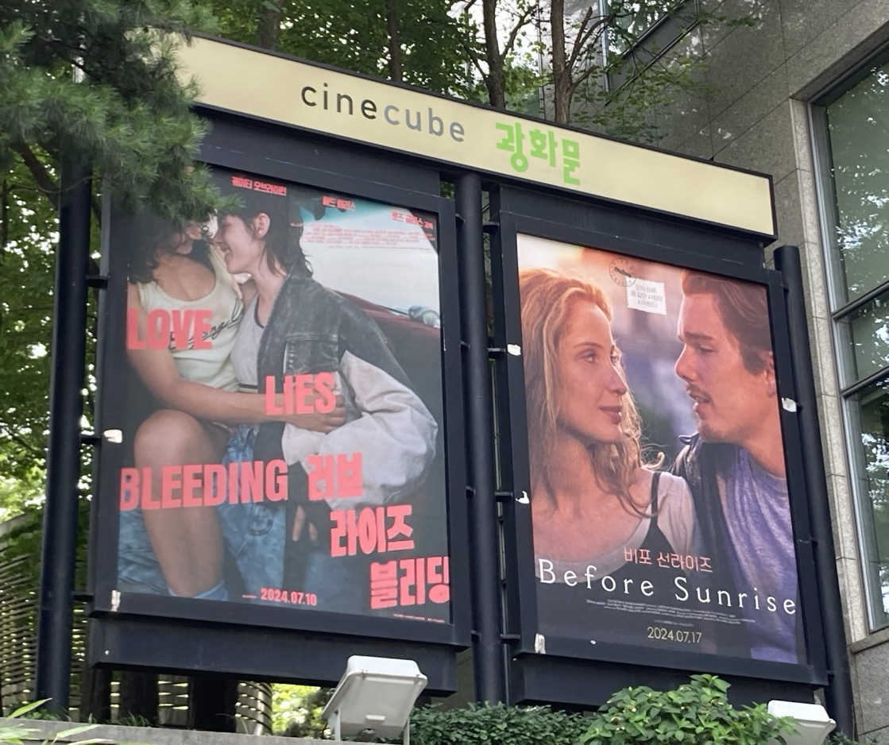
<비포선라이즈> 커밍쑨. 코로나 이후 한국 극장가가 불황이다 보니 명작을 재개봉 하는 것이 트렌드라고 한다.
 독일을 대표하는 영화감독 빔 벤더스의 2023년 작 <Perfect Days>. 베를린에선 작년 12월에 개봉해서 봤는데 한국은 이제야 상영중이다. 지루하다는 평가가 있지만 잔잔한 것도 좋아하는 나는 너무나도 깊게 봤다. 고민중이라면 꼭 보길.
독일을 대표하는 영화감독 빔 벤더스의 2023년 작 <Perfect Days>. 베를린에선 작년 12월에 개봉해서 봤는데 한국은 이제야 상영중이다. 지루하다는 평가가 있지만 잔잔한 것도 좋아하는 나는 너무나도 깊게 봤다. 고민중이라면 꼭 보길.
 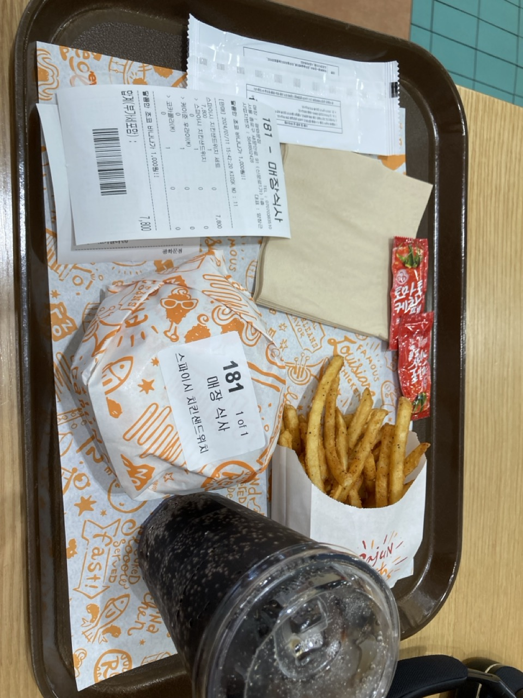
파파이스? 한국에서 철수했던 파파이스가 다시 들어왔더라. 초딩때 동네 녀석들 모아 생일파티 했던 곳인데 언젠가 종적을 감췄었다. 사실 맛은 기억이 안나는데 궁금해서 먹어본다. 스파이시 치킨버거 세트. 솔직히 나는 KFC 치킨버거가 더 맛있는 것 같다.
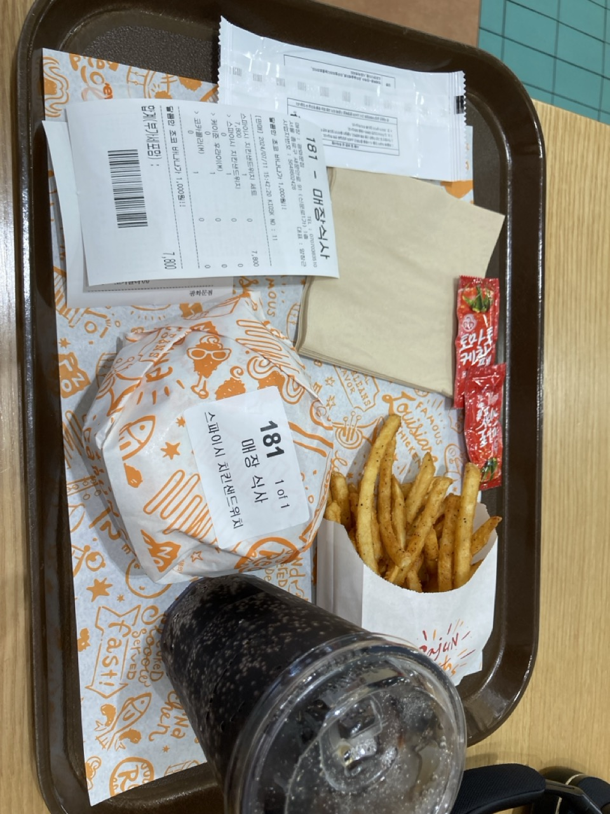
파파이스? 한국에서 철수했던 파파이스가 다시 들어왔더라. 초딩때 동네 녀석들 모아 생일파티 했던 곳인데 언젠가 종적을 감췄었다. 사실 맛은 기억이 안나는데 궁금해서 먹어본다. 스파이시 치킨버거 세트. 솔직히 나는 KFC 치킨버거가 더 맛있는 것 같다.
제너럴 이순신. 세월의 파도에도 녹슬지 않고 여전히 늠름하시다. 위기에 빠진 대한민국을 구해주시옵소서.
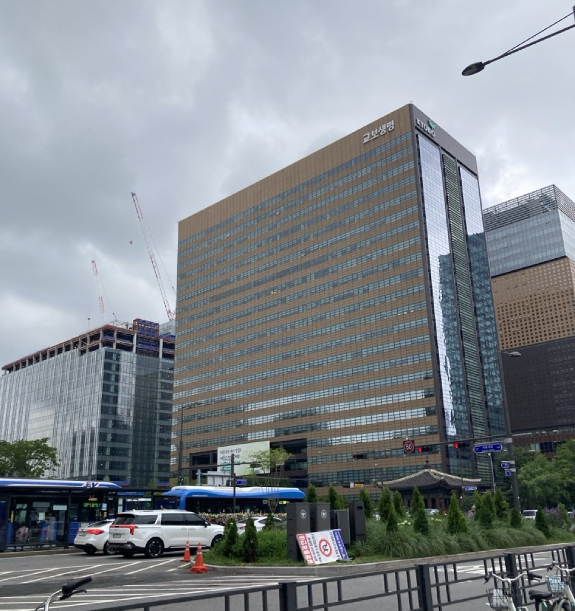
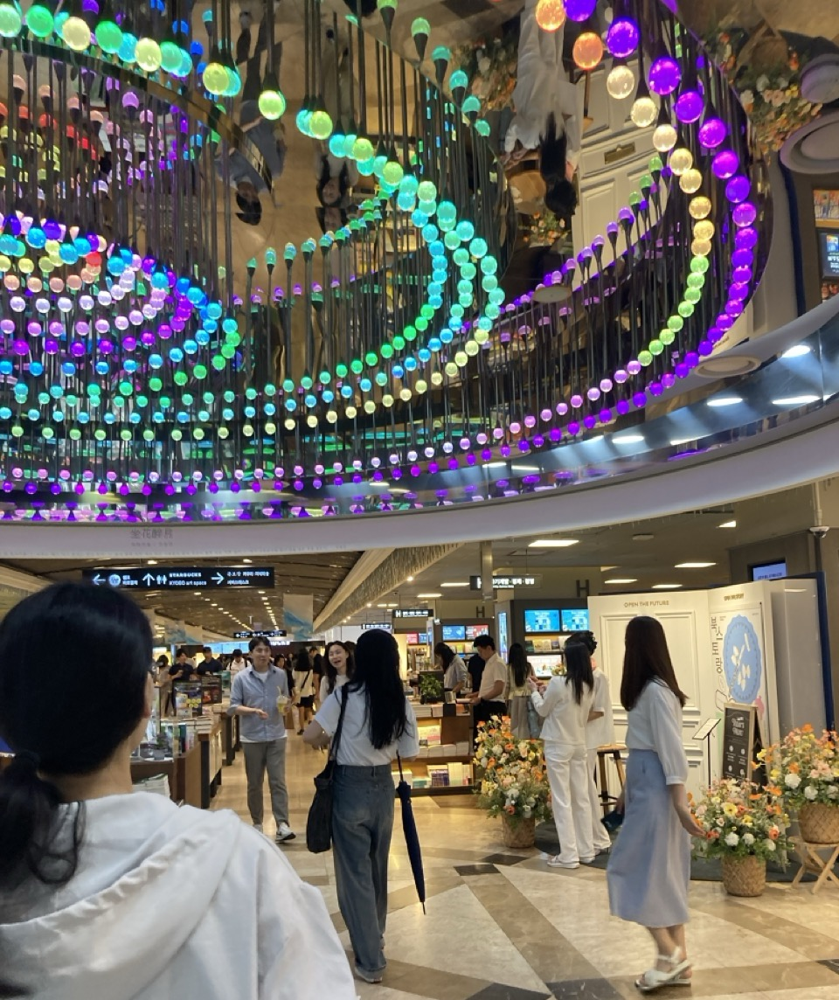
마음의 고향 광화문 교보문고. 대여섯살 무렵, 이곳 천장에 드넓게 달린 거울이 너무 재미있고 신기해서 엄마 손을 잡고 또 가자고 졸랐던 기억이 난다. 학생 때는 문제집이나 참고서를 보러 가기도 했지만, 공부하기 싫거나 마음이 심란할 때 무작정 걸어가 구석에 쭈그려 앉아 책을 보곤 했다. 핫트랙스의 펜이나 필기구에는 큰 관심이 없었지만 인근 여중여고 학생들이 많아 종종 방문하기도 했다.
공간 자체는 예전과 그대로인데 협소하게 느껴진다. 어쩌면 요즘 내 마음의 여유가 없어서 그런 걸 수도 있겠다. 베를린에서도 대형 서점 Dussmann이 있지만 이런 정감을 느낄 수는 없다. 그나마 베를린 서쪽에 살 때 Bücherbogen am Savignyplatz 이라는 서점이 좋았는데 이젠 멀어서 쉽게 가지는 못한다.
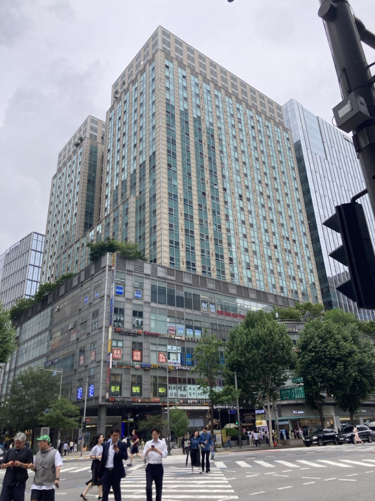
르메이르 빌딩에 있던 단골 필름사진현상소 <포토위드>는 아쉽게도 없어졌다. 약 10년전 부터 필름카메라의 인기가 꾸준히 있었지만, 치솟는 재료비와 임대료를 견디기는 쉽지 않았으리라. 생각난 김에 찾아본 2호선 시청역 앞 나의 단골 현상소 <스튜디오인>은 아직 건재하다.
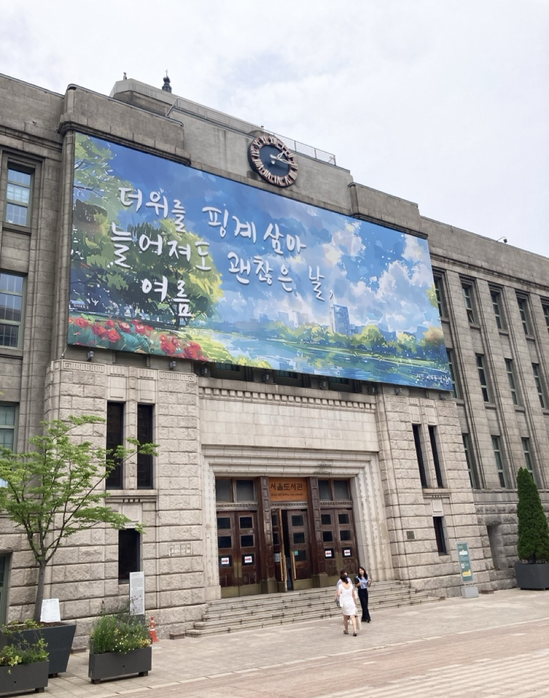
서울시청 구청사. 더위를 핑계 삼아 늘어지면 바로 죽을 것 같은 더위입니다만…
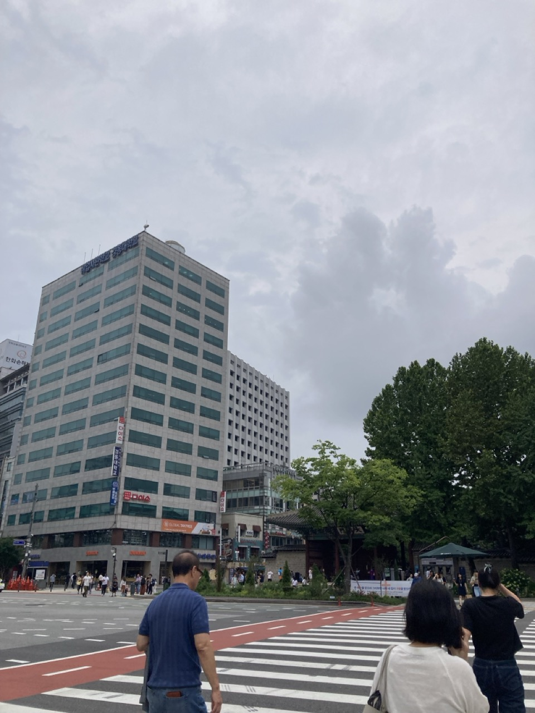 덕수궁 정동길 초입, 나름의 트레이드마크였던 노란색 간판 이얼싼중국어학원이 없어졌다. 아무래도 국제정세 때문에 예전보다 중국에 대한 호감도가 줄어들다보니 어쩔 수 없이 중국어도 인기가 없다보다.
 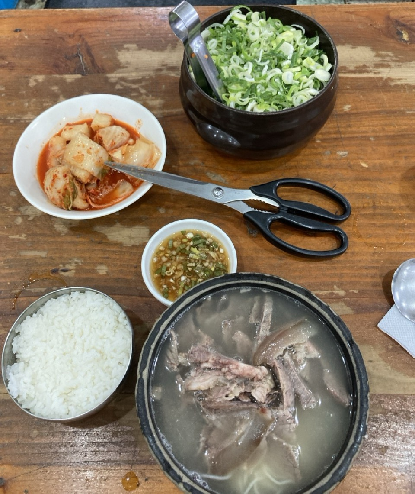
걸어걸어 중림장. 시청역, 충정로역, 서울역의 중간인 종로학원 앞 역사를 지닌 설렁탕 맛집이다. 정말 허름한 노포인데 종로학원 시절 정말 많이도 갔다. 자신있게 특대를 시킨다. 설렁탕은 먹어도 먹어도 질리지가 않는다. 그런데 주인아주머니 왈 바로 맞은편 종로학원이 없어졌다는 것이다. 그것도 몇 년이 됐다고 한다. 정말 충격적인데 그럴수도 있겠다 싶다.
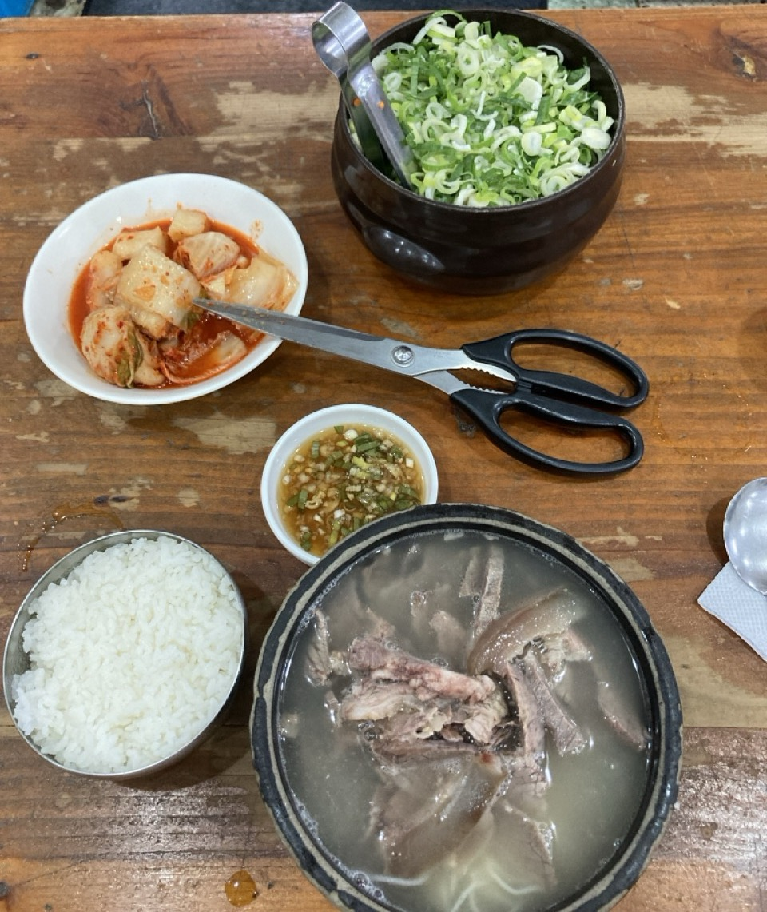
걸어걸어 중림장. 시청역, 충정로역, 서울역의 중간인 종로학원 앞 역사를 지닌 설렁탕 맛집이다. 정말 허름한 노포인데 종로학원 시절 정말 많이도 갔다. 자신있게 특대를 시킨다. 설렁탕은 먹어도 먹어도 질리지가 않는다. 그런데 주인아주머니 왈 바로 맞은편 종로학원이 없어졌다는 것이다. 그것도 몇 년이 됐다고 한다. 정말 충격적인데 그럴수도 있겠다 싶다.
새로운 것들은 내가 모르는 사이 계속 생겨있고, 추억 속의 것들은 너무나도 조용하게 없어져있다.
To Be Continued